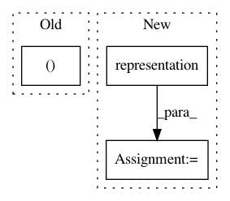

b53f2d7d650106a2ff175c2146b4ab897a3389d7,gpytorch/lazy/lazy_tensor.py,LazyTensor,diagonalization,#LazyTensor#Any#,1333
Before Change
// from ..utils.lanczos import lanczos_tridiag, lanczos_tridiag_to_diag
from ..lazy import lazify
qmat, tmat = gpytorch.utils.lanczos.lanczos_tridiag(
self.matmul,
max_iter=settings.max_root_decomposition_size.value(),
dtype=self.dtype,
After Change
from ..lazy import lazify
func = Diagonalization()
evals, evecs = func.apply(
self.representation_tree(),
self.device,
self.dtype,
self.matrix_shape,
self._root_decomposition_size(),
self.batch_shape,
*self.representation(),
)
evecs = lazify(evecs)
print("shape here!: ", evecs.shape)
elif method == "symeig":
In pattern: SUPERPATTERN
Frequency: 3
Non-data size: 3
Instances
Project Name: cornellius-gp/gpytorch
Commit Name: b53f2d7d650106a2ff175c2146b4ab897a3389d7
Time: 2021-02-22
Author: wjm363@nyu.edu
File Name: gpytorch/lazy/lazy_tensor.py
Class Name: LazyTensor
Method Name: diagonalization
Project Name: cornellius-gp/gpytorch
Commit Name: a60251aef9aaf35b42261e39e9cbf34c0ae10426
Time: 2017-06-28
Author: gpleiss@gmail.com
File Name: gpytorch/kernels/rbf_kernel.py
Class Name: RBFKernel
Method Name: forward
Project Name: cornellius-gp/gpytorch
Commit Name: 60a342edc8b501802135df44869353cc8604d838
Time: 2018-01-11
Author: gpleiss@gmail.com
File Name: gpytorch/lazy/kronecker_product_lazy_variable.py
Class Name: KroneckerProductLazyVariable
Method Name: _matmul_closure_factory